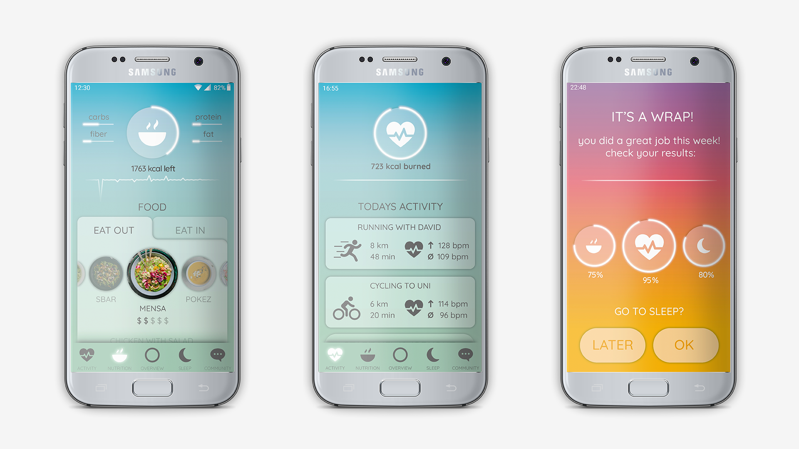
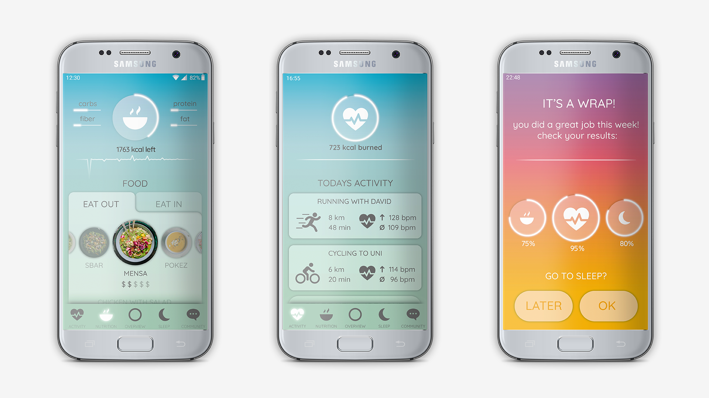

UX Rise
In the course Application Design in Germany, the task was to create a prototype for a fitness app after persona and an user story map. "Rise" is inspired by the elements of nature and the colors of the sunrise.
 

Group members: Cornelia Lundell, Anna-Rose Cugal & Lisa Rein.